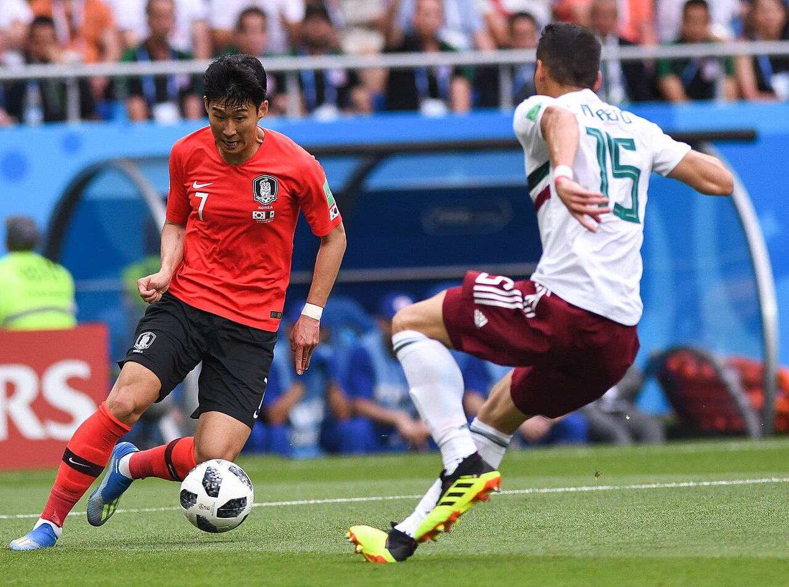

SONHEUNG-MIN
한 골은 한 장면이고, —골은 한 선수의 시간이다.
함부르크에서 런던, 로스앤젤레스와 태극마크까지. 프로 1군 공식 경기와 A매치 득점을 한 골씩, 출처와 함께 기록한 아카이브.

기준
(전체 골 중)
다섯 개의
유니폼
프로 1군 공식 경기와 A매치만 셉니다(연령별 대표·유소년·친선 이벤트·승부차기 제외). 숫자 옆 링크는 그 합계를 확인한 공식 출처입니다.
데이터 검증 수준
골 단위: Transfermarkt 골 목록과 ESPN 경기 득점 이벤트가 득점자·경기·시간(±1분)까지 일치. 경기 단위: 두 번째 출처가 경기와 득점은 확인하지만 시간은 대조하지 못함. 단일: Transfermarkt만 확인됨.
필드별 확보율
| 필드 | 확인 | 비율 |
|---|
점 하나가 1골이며, 실제 득점 순서( → )대로 놓고 소속팀 색을 칠했습니다.
꾸준함의
기록
위 필터는 모든 차트와 기록표에 함께 적용됩니다. 막대를 누르면 그 연도·시즌으로 좁혀집니다. 클럽 시즌별 보기에는 대표팀 골이 빠집니다.
연도별 득점
팀별 분포
막대를 누르면 그 팀으로 필터합니다.
대회별 분포
대회 안에서 팀별로 나눠 칠했습니다. 막대를 누르면 그 대회로 필터합니다.
승리
방정식
각 카드는 출처에서 값이 확인된 골만 세고, 확인되지 않은 골은 '미상'으로 따로 표시합니다. 추가시간 골은 해당 전·후반 구간에 넣었습니다.
득점 시간대
15분 구간 · 연장전 별도
발 · 머리
PL 127골은 리그 공식 통계(왼발 49·오른발 74·머리 4)와 일치합니다. PL 공식 ↗
득점 방식
페널티킥·직접 프리킥·직접 코너킥 외에는 모두 필드골입니다.
홈 · 원정
원자료의 홈·원정 표기 기준입니다(중립 경기장 구분 없음).
경기 결과
손흥민이 득점한 경기의 최종 결과입니다. 승부차기 승패는 무승부로 셉니다.
도움을 준 선수
원자료에 도움 기록이 있는 골만 셉니다. 상위 8명입니다.
기대를 넘는 결정력
점 하나가 1골(위쪽이 상대 골문). 점을 누르면 상세 패널이 열립니다. 거리는 Understat 좌표를 105×68m 규격으로 환산한 근사값입니다.
xG 구간별 골
슈팅 거리
경기를
바꾼 골
카드를 누르면 그 골의 경기 정보와 원자료 링크가 열립니다.
단짝과
단골 상대
골 번호를 누르면 상세 패널이 열립니다. 빈 칸(—)은 출처에서 확인하지 못한 값입니다. 날짜는 Transfermarkt 표기일이라 미주 저녁 경기는 현지 날짜보다 하루 늦을 수 있습니다.
| 날짜 | 팀 | 대회 | 상대 | 홈/원정 | 시간 | 골 직후 | 최종 | 방식 | 발/머리 | 도움 | xG | 영상 | 검증 |
|---|
두 출처가
맞춘 골
포함 범위 — .
제외(골)
- 2022-03-24 이란전 골 직후 스코어는 Transfermarkt 2-0 대신 ESPN·위키백과의 1-0을 채택했습니다.
- 2019-03-26 콜롬비아전은 ESPN에 손흥민 득점이 2개로 올라 있지만, Transfermarkt·위키백과(KFA 인용) 기준 1골로 셉니다.
- 2018-03-07 유벤투스전의 발 정보는 두 출처가 엇갈려(오른발/왼발) 비워 두었습니다.